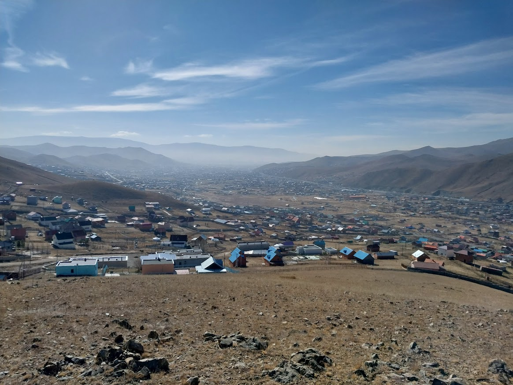
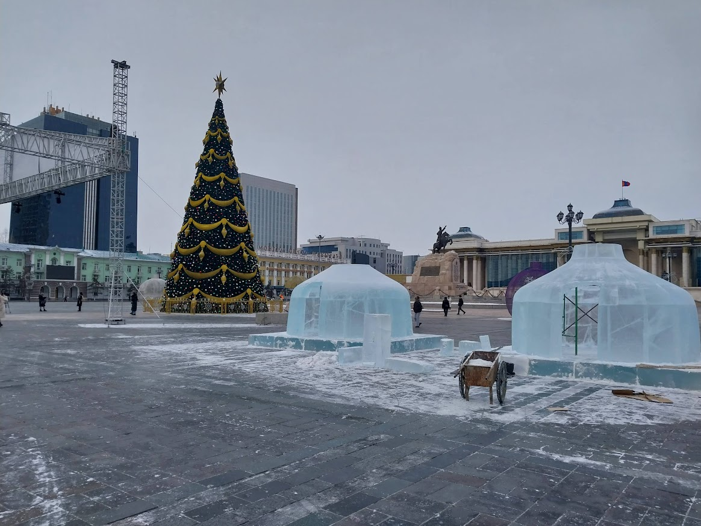

The Sukhbaatar district is one of the northern districts of Ulaanbaatar. It spans far north into some ger districts.

The main plaza of Ulaanbaatar is Sukhbaatar square. There is a statue of one of the famous Mongolians named Sukhbaatar, and at the front of the main building is a statue of Genghis Khaan.

During the winter, people make ice sculptures of traditional Mongolian Gers, slides, and a maze. Ice is easy to get here since it can get down to -40 degrees.